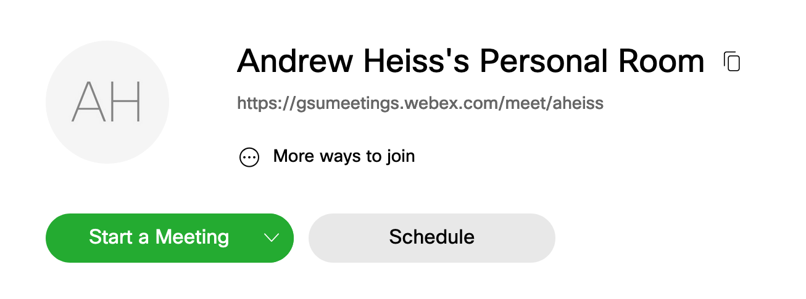
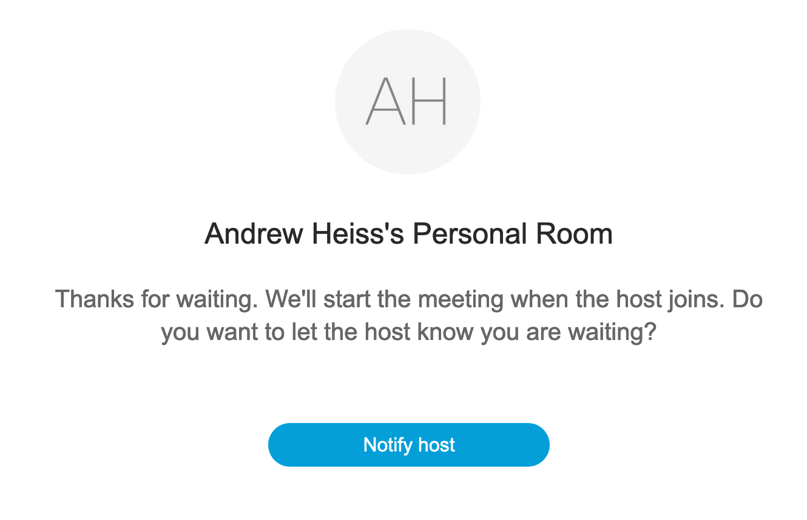
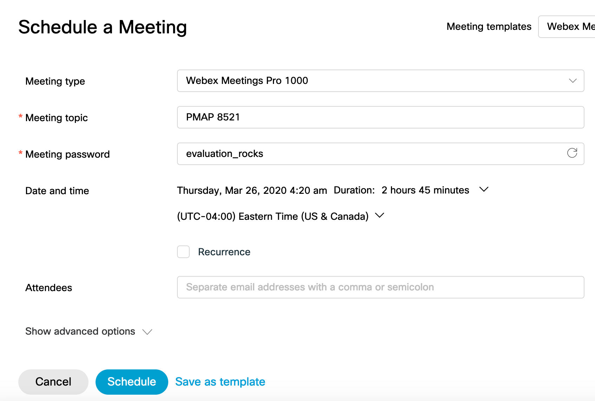
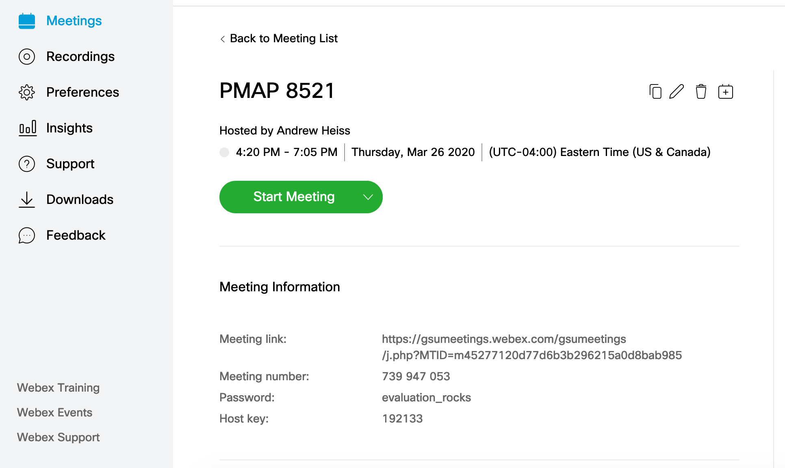
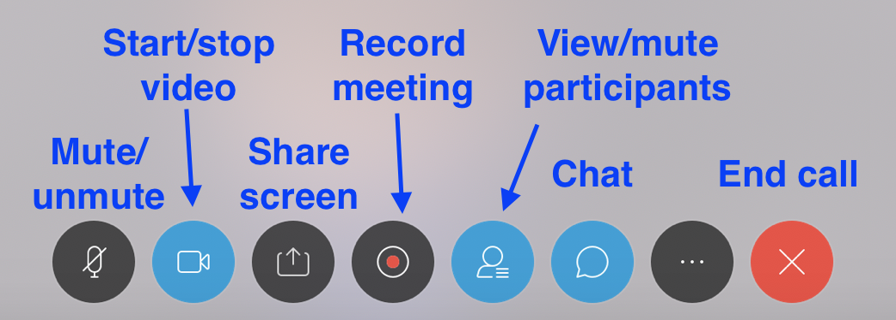
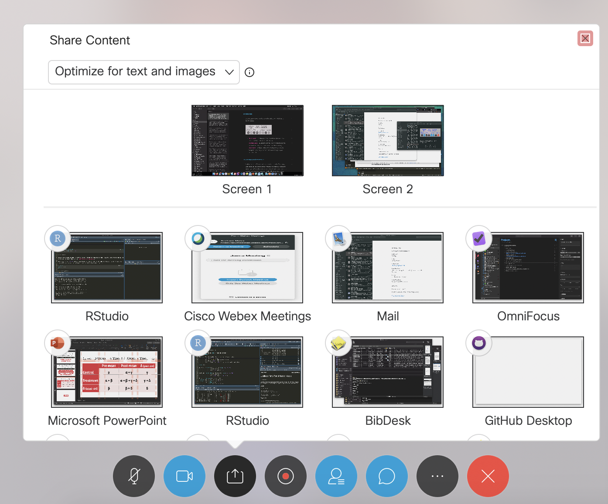
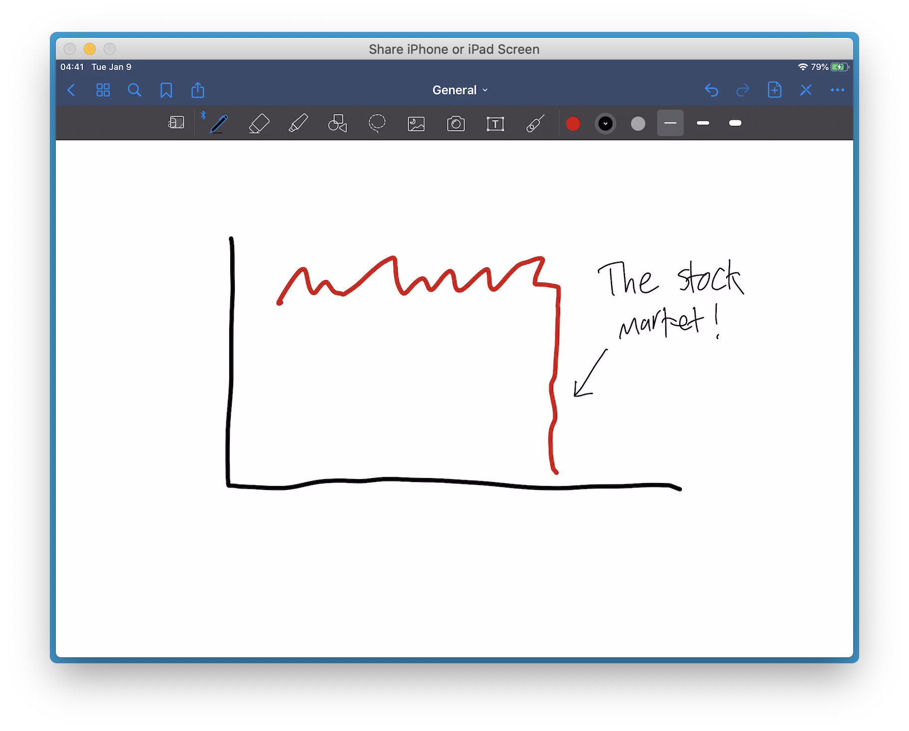

![]()
This is written for instructors in the Department of Public Management and Policy at the Andrew Young School of Policy Studies at Georgia State University, but it’s hopefully widely applicable too.
With more than 100 universities moving their teaching online (including Emory just last night), it’s looking more and more inevitable that GSU will make a similar switch any time now.
Below, I’ve described some resources to help the switch to online teaching go smoother. This is by no means comprehensive! Here are a bunch of other resources you can/should consult:
- CETL’s strategies for teaching remotely
- CETL’s faculty quickstart guide
- CETL’s online teaching FAQs
- CETL’s iCollege resources
- Stanford’s “Teaching effectively during times of disruption”
- Dr. Rebecca Glazier on effective online teaching
- Dr. Jessie Male on effective online teaching
- Dr. Rebecca Kreitzer’s online teaching tips
- Dr. Shana Gadarian’s resources
- Dr. Simon Halliday’s resources for teaching online during COVID-19
- Engaging Students’ resources
We are in triage mode
In this time of wild uncertainty and anxiety, remember to keep these principles in mind first:
- Lower your expectations for the class
- Drop everything that’s not essential
- Keep it simple
- Communicate clearly
- Be flexible
- Be generous
- Ask how you can help
Consider taking a few minutes at the beginning of class to address student concerns about COVID-19, clear up misconceptions, and provide basic information about the disease. I’ve found that many students don’t have complete information about the pandemic, and talking through it and conveying basic information is reassuring.
Look at the first few slides of my lecture here or this lecture here for some examples.
flattenthecurve.com is an excellent resource. Direct your students to it (and rely on it yourself). The Johns Hopkins COVID-19 map and the New York Times COVID-19 map are both reliable sources for tracking the spread of the disease
Synchronous teaching
Perhaps the easiest option for moving your classes online with minimal extra work is to continue to hold your classes at their regularly scheduled time and have students participate remotely via synchronous video. I’ve been doing this for the past two weeks and it’s caused minimal disruption and extra work from my end.
Webex
Webex is corporate video conferencing software that GSU has a subscription to. It is similar to Zoom (which you have have heard of or used elsewhere; Zoom was started by a former Webex employee after Webex was bought up by Cisco a few years ago), and provides all sorts of tools for having productive video conferences.
Equipment you need
- Computer
- Webcam
- You can use the one that’s built in to your laptop, or you can use an external one if you have one already (the one in your laptop is more than sufficient)
- Microphone
- You can use the one that’s built in to your laptop, or you can use an external one. The one in your laptop is generally sufficient if you’re planning on sitting in front of your computer, but if you’re walking around a room, it might struggle to pick up your sound. It might be a good idea to get an external microphone. There are a billion options out there—I got this one which transmits wirelessly to my computer through USB, and includes both a lapel mic and a headset mic. If you’re only planning on recording at a desk, these articles (link and link) have great suggestions for good mics.
Getting started
If you haven’t downloaded Webex on your computer, go to https://gsumeetings.webex.com/ and log in with your GSU account. Once you’re logged in, you can click on the big green “Start a Meeting” button to start.

You’ll be prompted to download the Cisco WebEx Meetings application if you haven’t already. Follow all the prompts to install it.
From now on, you can just open the Cisco Webex Meetings app directly on your computer instead of going to https://gsumeetings.webex.com/.
Meeting rooms and URLs
Because Webex was invented for remote meetings, the whole application is based on that metaphor. When you teach and have students join via video, they’ll be joining a meeting. Participants join meetings by visiting specific URLs. You can use a permanent URL that will work every time, or you can generate meeting-specific URLs for specific classes
Your permanent personal meeting URL
Webex gives you a permanent meeting URL—in the screenshot above, you can see that mine is https://gsumeetings.webex.com/meet/aheiss. If you send that link to your students, they’ll join you via video after visiting the URL. If you’re not there (e.g. they click on the link 30 minutes before class and you haven’t started streaming anything yet), they’ll see this:

They can wait on that screen until you start the meeting from your end.
The nice thing about using your general permanent meeting URL is that it doesn’t change. You can send it to students who want to meet with you during office hours, or use it for committee meetings, or use it for each of your classes. The downside, though, is that it’s the same for everyone. If you’re meeting with a student during office hours, and a student from another class clicks on the link, they’ll automatically join your one-on-one meeting (which could be awkward!)
Meeting-specific URLs
To avoid having unwanted guests join your class or office hours or committee meetings, you can generate meeting-specific URLs by scheduling future meetings.
From either the Webex Meetings application or from https://gsumeetings.webex.com/, click on “Schedule” and enter the details for your class or meeting, including the start and end time. It makes you choose a password, but it doesn’t need to be highly secure or anything (I’ve used stuff like “asdf” or “1234” in the past).

If you include e-mail addresses in the “Attendees” section, Webex will send calendar invitations to your students with instructions on how to connect, including the meeting-specific URL and the meeting password. If you don’t include e-mail addresses there, it’s okay—you can communicate that information to them separately.
After you click on “Save”, you’ll get a confirmation e-mail from Webex, and you’ll see the meeting listed in the “Meetings” section of the Webex webpage:

At the bottom of page, you’ll see a “Meeting Information” section that includes the meeting-specific URL and the password for the meeting. Send those details to your students if you didn’t invite them through Webex’s system. You don’t really need to to worry about the meeting number or host key. The meeting number is only needed if students join the call/conference/meeting/class over the phone (there are instructions for doing that in the confirmation e-mail that Webex sends to you and t to them), and the host key is only needed if you need to host the meeting by phone.
Webex basics
Once you start a video call, you’ll have a toolbar at the bottom with a bunch of different options:

Mute/unmute: It’s often wise to mute yourself during breaks or while students are talking (or if you take a drink of water)
Start/stop video: You can turn your video on/off here (the meeting will continue without video, so don’t worry about it accidentally ending)
Share screen: By default, Webex will show whatever your camera is pointing at (i.e. you), but you can have it stream other things, like your computer screen. You can choose to share specific applications, like PowerPoint or Excel, or you can share your entire screen. If you’re plugged into a projector or screen (like when teaching), you can share “Screen 2” so students can see the projected PowerPoint (and not see your notes in presenter view)

Webex sharing panel If you scroll down to the bottom of the share content window, you can also share a whiteboard, which lets you draw on screen with your mouse:
iPad and whiteboard sharing If you plug an iPad or iPhone into your computer, you can also share that screen, which is an even easier way to have a whiteboard. Find some free/cheap drawing app for your iPad (if you have one) and stream that:

iPad sharing To stop sharing your screen, move your mouse to the top of the screen and you’ll see a toolbar pop out. Click on “Stop Sharing” there.
Record meeting: If you click on the “Record meeting” button, Webex will record the class session. When you finish the meeting, it will process all the video and send you an e-mail with a link that students can use to view later. I’d recommend doing this every time you teach for students who might not be able to participate synchronously.
View/mute participants: If you click on this button, you’ll see a list of everyone on the call, along with indicators showing if they’ve turned off their video or muted themselves. All students should always keep themselves muted by default, otherwise it gets really noisy and you’ll get lots of audio feedback. If students forget to mute themselves, you can mute them from here. When students want to ask a question or make a comment or respond to a question, they should unmute themselves. Remembering to unmute before speaking takes a little while to get used too, but it really makes the class go a lot smoother.
Chat: You can chat with students too, which is often helpful if you want to have students virtually raise their hand or chime in or ask questions while you’re talking.
End call: This, um, ends the meeting.
Webex in iCollege
There’s a way to embed Webex meeting rooms inside iCollege courses, but I haven’t played with this yet, mostly because I use Webex for so many other things (office hours meetings, nonprofit board meetings, coauthor meetings), that I’m used to using it on its own. You might want to play with the iCollege integration for fun, though.
Other ways to teach synchronously
You don’t have to use Webex if you don’t want to! You can use Zoom, FaceTime, Skype, Google Hangouts, Facebook Messenger, WhatsApp, or any other live video calling service. If you don’t care about video and audio interaction with your students, you can stream your class live on YouTube or Twitch and have students participate through chat. If you want to be extra fancy, you can use the free OBS application to switch between screens, video cameras, tables, etc. while streaming.
Distribution of course materials
Students need to be able to take quizzes or tests, turn in assignments, and access course materials remotely. iCollege is the best avenue for this, since it’s GSU’s main learning management software. If you need help, CETL has a lot of resources.
If you’re familiar with web hosting, you can be extra fancy and post slides and class materials to a public website too (like this).
Meeting with students, GRAs, and colleagues
If campus closes (or if you voluntarily start practicing social distancing and work from home), you need a way to continue to meet with your students, GRAs, coauthors, colleagues, committee members, and others. The easiest way to do this is probably through Webex (though you can use whatever video application you feel most comfortable with! I meet with different coauthors over the phone, through FaceTime, through Zoom, and through Google Hangouts). You can either use your permanent private meeting room, or schedule a specific meeting with a password and meeting-specific URL.
Coordinating student meeting times can be a hassle and you’ll want to avoid the inevitable e-mail tag that happens when trying to schedule stuff. I’ve found it easiest to use a free online service like Calendly or YouCanBook.me. These connect to your Google or Outlook calendars and let you set aside times that you are available. Students can then sign up for times to meet with you during those available slots. If you schedule other things during those times, those slots will become unavailable and people won’t be able to schedule meetings then.
You can see what this looks like here: https://calendly.com/andrewheiss/meeting/. I’ve had enormous success with this under non-pandemic conditions—I don’t typically have set office hours during the week (like Mondays from 11-1 or something); instead, I have several chunks of time available for students and GRAs to schedule meetings, and they choose whatever slots are most convenient for them.
Asynchronous teaching
At this point, given that we’re halfway through the semester, it’s unlikely that you’ll need to switch to asynchronous teaching. Developing a fully asynchronous class is hard and time-consuming and expensive—there’s a reason why we have an instructional designer on staff (Mya!) and why GSU offers immense support for developing online classes.
If you want to switch to a completely asynchronous class, consult with Mya!
If you want to have some asynchronous elements, like pre-recorded screencasts of how to do something in Excel, Stata, or R, or a miniature chunk of a lecture, or something similar, there are several useful resources:
- Kaltura: GSU has a subscription to this software. This is essentially like Webex and allows you to record yourself or your screen. It does not stream the recording live, however—it’s best for recording screencasts or recording yourself giving a lecture.
- PowerPoint: You can record yourself using PowerPoint and upload the resulting video file to iCollege
- QuickTime Player: On macOS, you can use the QuickTime Player app to record audio, video, or your screen if you don’t want to use Kaltura
If you want to edit or trim video that you create, you can use applications like these:
- iMovie: macOS comes with the free iMovie, which lets you do basic video editing
- Photos: Windows 10 comes with the free Photos app, which also lets you do basic video editing.
- Adobe Premiere or Adobe Premiere Rush: If you want to be extra fancy, you can use Adobe Premiere (which you have access to through Adobe Creative Cloud, which you get for free from GSU)
Citation
@online{heiss2020,
author = {Heiss, Andrew},
title = {Emergency Online Teaching Resources},
date = {2020-03-12},
url = {https://www.andrewheiss.com/blog/2020/03/12/emergency-online-teaching-resources/},
doi = {10.59350/3bzxm-ecg70},
langid = {en}
}